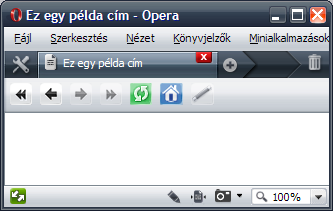
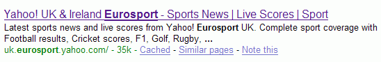
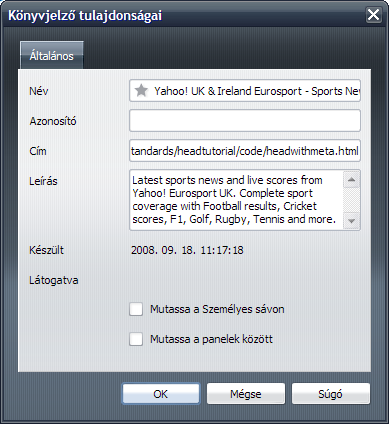

13. A HTML <head> eleme
- Előző leírás — A HTML alapjai
- Következő leírás — Megfelelő doctype választása a HTML dokumentumokhoz
- Tartalomjegyzék
Bevezető
Ebben a leírásban a HTML dokumentumoknak egy olyan részével fogunk foglalkozni, amely méltánytalanul kevés figyelmet kap: ezek azok a jelölések, amelyek a head elemben találhatóak. A leírás végére tudni fogod, hogy mire szolgálnak ennek a résznek a különböző elemei, beleértve a title elemet, a kulcsszót és a leírást (amelyeket meta elemekkel adhatsz meg), valamint a head előtt található doctype elemet is megemlítjük. Fogunk beszélni még a JavaScriptről és a CSS-ről is (külső és belső megvalósításról egyaránt), valamint arról, hogy mit ne tegyünk a head elembe. A demo forrásfájlokat innen töltheted le, erre fogunk hivatkozni ebben a leckében; ebben nyugodtan próbálkozhatsz, miután átolvastad ezt az anyagot. A leckében foglaltakat olvasd el elejétől a végéig, mivel fokozatosan építjük fel a head elem használatának a legjobb módszereit. Minden rész önmagában is érvényes, de a végén az összefoglalóban, ahol a legjobb módszerekről beszélünk, újragondolhatod a korábbi tanácsokat. Ebben a leírásban a következő témákról lesz szó:
- Miféle head? Miről beszélsz?
- A dokumentum elsődleges nyelvének beállítása
- A dokumentum megítélése a címe alapján
- Kulcsszavak és leírás hozzáfűzése
- Mi a helyzet a megjelenéssel? Stílusok hozzáadása
- Dinamikus funkciók hozzáadása JavaScripttel
- Állj! A beágyazott CSS és JavaScript nem jó ötlet!
- Összefoglaló
- Tesztkérdések
Miféle head? Miről beszélsz?
Egy korábbi leírásban már olvashattál arról itt is, hogy az érvényes HTML dokumentumban meg kell adni egy doctype elemet — ez adja meg, hogy milyen típusú HTML-t fogunk használni, hogy a böngésző aztán a megfelelő szabályokat alkalmazza. Minderről bővebben a 14. leírásban fogunk beszélni, egyelőre elég annyit rögzítenünk, hogy a doctype megszabja, hogy a dokumentumnak tartalmaznia kell egy html elemet, ez pedig egy head és egy body elemet. Az időd nagy részét a body („törzs”) elemben fogod eltölteni, mivel ide kerül a dokumentum teljes tartalma. A head („fej”) elemnek látszólag kisebb szerepe van, mivel a title („cím”) elem kivételével semmi nem lesz látható a látogatók számára azok közül, amiket ide írsz. Viszont ebbe a részbe kerülnek a böngészők számára szóló utasítások, és itt tárolhatsz a dokumentumról extra információkat — más néven metaadatokat.
A dokumentum elsődleges nyelvének beállítása
Van egy olyan rövid információ a dokumentumról, amely nem a head elembe, hanem annak a szülőjébe, a html elembe kerül. Ez pedig nem más, mint a dokumentum természetes nyelve. A természetes nyelv alatt az emberi nyelvet értem, mégpedig hogy angol, francia vagy magyar. Ez segít a képernyő-felolvasóknak, mivel például az „eleven” szót másképp kell kiolvasni angolul vagy magyarul, de segíthet a keresőrobotoknak is. Mindig hasznos, ha megadod a dokumentum elsődleges nyelvét, különösen akkor, ha nemzetközi olvasótábornak írsz; mégsem látni sok olyan oldalt, amelyik megteszi ezt. A következőképpen állíthatod be a nyelvet:
<html lang="hu-HU">
...
</html>A dokumentum egyes részeinek is beállíthatsz egy nyelvet a lang attribútum használatával az adott elemeken, például <span lang="fr">Bonjour</span>.
Az attribútum, amiben a nyelvet megadhatod, a használt doctype-tól függ. A W3C szerint:
HTML esetében csak alangattribútumot használjuk; atext/htmlformában szolgáltatott XHTML 1.0 esetében használhatjuk alangésxml:langattribútumokat; és az XML formában szolgáltatott XHTML esetében pedig csak azxml:langattribútumot.
A nyelv kódja lehet egy kétbetűs kód, mint például az en az angolhoz, négybetűs kód, mint például az en-US az amerikai angolhoz, vagy más, ritkán használt kód is. A kétbetűs kódok az ISO 639-1 alatt találhatóak meg.
A dokumentum megítélése a címe alapján
A head egyik legfontosabb része a title elem. Gyakorlatilag az összes böngészőben és kliens eszközök többségén a title elemben található szöveg jelenik meg — a weblap neveként — az ablak fejlécében (ez a böngésző ablakát körülvevő keret felső része). Ez az első dolog, amit a látogatók általában meglátnak egy weblap megnyitásakor, ezért rendkívül fontos. Továbbá, a kisegítő megoldások, mint például a képernyő-felolvasók, ezt adják meg először a felhasználóiknak, így ebből szűrhetik le először, hogy mire számíthatnak majd az oldalon; de a keresőrobotok is nagyon hasonlóan működnek, így ha egy könnyen megérthető és a jó kulcsszavakat tartalmazó címet adsz az oldaladnak, akkor az esélyed arra, hogy a keresőkön keresztül megtaláljanak, drasztikusan megnő. Vegyük például a következő HTML dokumentumot (headexample.html a zip fájlban), és nyissuk meg egy böngészőben.
<!DOCTYPE HTML PUBLIC "-//W3C//DTD HTML 4.01//EN" "http://www.w3.org/TR/html4/strict.dtd">
<html>
<head>
<title>Ez egy példa cím</title>
</head>
<body>
</body>
</html>
Ha megnyitod ezt az oldalt, láthatod, hogy a title elem tartalma az ablak fejlécében és navigáció fölött a fülön is megjelenik.
1. ábra: A title elem megjelenítése a böngészőben
Sok leírást találhatsz a weben arról, hogy hogyan adhatsz jó címet az oldalaidnak, ezek többsége a keresőoptimalizálással (SEO) kapcsolatos. Ne ess túlzásokba, amikor ezeket látod: a keresőket esetleg becsaphatod egy optimalizált címmel, és talán megszerezhetsz egy ideig egy jobb találati pozíciót, de jobban jársz, ha inkább egy rövid, informatív címet adsz a dokumentum tartalmáról. A „Kutyák tenyésztése — tippek a farkaskutyákról” sokkal jobban olvasható, mint mondjuk a „Kutyák, farkaskutyák, tenyésztés, kutya, tipp, ingyen, kedvenc”.
Kulcsszavak és leírás hozzáfűzése
A következő lépés első látásra talán feleslegesnek tűnhet, mivel ezek az elemek soha nem jelennek meg közvetlenül a látogató előtt: a leírás és a kulcsszavak. Mindkettőt meta elemeken keresztül adhatjuk hozzá a head elemhez, amint az az alábbi példán látszik, a Yahoo! Eurosport oldaláról (headwithmeta.html):
<!DOCTYPE HTML PUBLIC "-//W3C//DTD HTML 4.01//EN" "http://www.w3.org/TR/html4/strict.dtd">
<html>
<head>
<title>Yahoo! UK & Ireland Eurosport—Sports News | Live Scores | Sport</title>
<meta name="description" content="Latest sports news and live scores from Yahoo! Eurosport UK. Complete sport coverage with Football results, Cricket scores, F1, Golf, Rugby, Tennis and more.">
<meta name="keywords" content="eurosport,sports,sport,sports news,live scores,football,cricket,f1,golf,rugby,tennis,uk,yahoo">
</head>
<body>
</body>
</html>
Ha megnyitod ezt az oldalt a böngésződben, semmit nem fogsz látni az oldalon. Ha viszont feltöltöd a lapot a netre, és egy kereső beindexeli, akkor a megadott leírás megjelenik majd a hivatkozás alatt a találati listában, amint az a 2. ábrán látható:
2. ábra: A leírás megjelenik a keresők találati oldalán
Ez az információ így már kritikus lehet a lehetséges látogatók szempontjából, mivel ennek alapján dönti el, hogy rákattint a találatra vagy nem. A leírásoknak van egy másik haszna is — egyes böngészőkben a leírás extra információként jelenik meg, ha a felhasználó az oldalt elmenti a kedvencek közé, ahogy az a 3. ábrán látható:
3. ábra: A leírás egyes böngészőkben akkor is megjelenik, ha az oldalt a kedvencek közzé teszed
Szóval, bár nincs azonnali haszna a meta leírás beillesztésének, mégis ennek nagyon fontos szerepe van a weblap sikeressége szempontjából. Ugyanez — bár kisebb mértékben — vonatkozik a hozzáadott kulcsszavakra is.
A szemetelőknek sokéves munkával sikerült elérniük, hogy a keresők már ne vegyék többé túl komolyan a megadott kulcsszavakat, ennek ellenére még mindig hasznosak lehetnek akkor, ha gyorsan át akarsz nézni több dokumentumot egyszerre a tartalom elolvasása és értelmezése nélkül. A meta kulcsszavakat használhatod például egy tartalomkezelő rendszerben, ahol egy script leindexeli őket, így a keresőd gyorsabban fog működni. Soha nem árthat, ha biztosítasz egy módszert az oldalaid keresésére a tartalom átvizsgálása nélkül. Ha több kulcsszavat adsz a meta elemhez, akkor lehetőséget adsz magadnak arra, hogy a jövőben egy gyors és okos keresőt készíthess az oldalaidhoz. Gondolj úgy a kulcsszavakra, mintha kis könyvjelzők lennének, amelyeket egy vastag könyvben hagysz, hogy ezekkel gyorsan megtalálhasd, amit keresel anélkül, hogy a teljes fejezetet át kellene olvasnod.
Mi a helyzet a megjelenéssel? Stílusok hozzáadása
A következő dolog, amit a head elemhez hozzáadhatsz a dokumentumban, az a stílusozás, amelyet CSS (Cascading Style Sheets) segítségével valósíthatsz meg. Ezt beépítheted közvetlenül a head elembe a style elem segítségével, mint az alábbi példában (headinlinestyles.html):
<!DOCTYPE HTML PUBLIC "-//W3C//DTD HTML 4.01//EN" "http://www.w3.org/TR/html4/strict.dtd">
<html>
<head>
<title>Kutyatenyésztés – Tippek farkaskutyákról</title>
<meta name="description" content="Hogy tenyésszünk farkaskutyákat, tippek a helyes tenyésztésről és információk a tenyésztéssel kapcsolatos gyakori esetekről.">
<meta name="keywords" content="kutyák,farkaskutya,tenyésztés,kutya,tippek,ingyen,kedvenc">
<style type="text/css">
body {
background: #000;
color: #ccc;
font-family: helvetica,arial,sans-serif;
}
</style>
</head>
<body>
Teszt!
</body>
</html>
Ha ezt a kódot megnyitod a böngésződben, csak egy szürke „Teszt!” feliratot fogsz látni fekete háttéren, amelynek a betűtípusa Helvetica vagy Arial lesz, a használt rendszertől függően. A style elem tartalmazhat egy media attribútumot is, amelyben megadhatod, milyen típusú eszközön akarod ezt a stílust alkalmazni; például akkor akarod használni ezt a stílust, ha az oldal egy képernyőn jelenik meg, egy kézi eszközön vagy nyomtatáskor? Több média típus közül is választhatsz, amelyek között az alábbiak a leghasznosabbak:
screen— képernyőn való megjelenítéskor használhatod.print— ebben megadhatod, hogyan nézzen ki a dokumentum nyomtatáskor.handheld— ezzel adhatod meg a dokumentum megjelenését mobil- és más kisméretű eszközökön.projection— HTML prezentáció készítéséhez használhatod, amelyet például az Opera Show is támogat.
Ha például nyomtatáskor más színeket és nagyobb betűket akarsz használni, mint a képernyőn, akkor az első style blokk után megadhatsz egy másikat, amelyben megadod a media attribútumot print értékkel, amint az alábbi kódban látható (a teljes kódot a headinlinestylesmedia.html fájlban találod):
<style type="text/css" media="print">
body {
background: #fff;
color: #000;
font-family: helvetica, arial, sans-serif;
font-size: 300%;
}
</style>
Mostantól, ha ki akarod nyomtatni a lapot, a böngésző a print típusú stíluslapot fogja használni a dokumentumhoz a screen típusú helyett. Te is kipróbálhatod, ha megnyitod a headinlinestylesmedia.html fájlt, és megnézed a nyomtatási előnézetet. Az eredményt a 4. ábrán láthatod:
4. ábra: Ugyanaz a lap képernyőhöz és nyomtatáshoz való stílussal
Dinamikus funkciók hozzáadása JavaScripttel
Egy másik dolog, amelyet a head elemhez hozzáadhatsz, az a böngésző által futtatható scriptek — más szóval „kliens oldali scriptek” —, amelyeket JavaScriptben írhatsz meg. Ahogy már a 4. leírásban olvashattad, a JavaScript dinamikus működést ad a statikus HTML dokumentumokhoz, például animációs effekteket, adatellenőrzést vagy más olyan dolgokat, amelyeket bizonyos felhasználói műveletek válthatnak ki.
A JavaScriptet a script taggel adhatod hozzá az oldaladhoz. Amikor a böngésző találkozik egy ilyen elemmel, azonnal megállítja a dokumentum feldolgozását, és a feldolgozás folytatása előtt megpróbálja végrehajtani az elemben található kódot. Így aztán ha azt szeretnéd, hogy a JavaScripted még a dokumentum betöltése előtt lefusson, akkor a head elemben kell megadnod. Az alábbi scripttel például figyelmeztetheted a felhasználót, hogy egy bizonyos hivatkozás egy másik kiszolgálóra fogja vinni (headscript.html):
<!DOCTYPE HTML PUBLIC "-//W3C//DTD HTML 4.01//EN" "http://www.w3.org/TR/html4/strict.dtd">
<html>
<head>
<title>Kutyatenyésztés – Tippek farkaskutyákról</title>
<meta name="description" content="Hogy tenyésszünk farkaskutyákat, tippek a helyes tenyésztésről és információk a tenyésztéssel kapcsolatos gyakori esetekről.">
<meta name="keywords" content="kutyák,farkaskutya,tenyésztés,kutya,tippek,ingyen,kedvenc">
<style type="text/css" media="screen">
body {
background: #000;
color: #ccc;
font-family: helvetica,arial,sans-serif;
}
a { color: #fff }
</style>
<style type="text/css" media="print">
body {
background: #fff;
color: #000;
font-family: helvetica,arial,sans-serif;
font-size: 300%;
}
</style>
<script>
function leave() {
return confirm("Ezzel √°tugrasz egy m√°sik oldalra,\n biztos, hogy ezt akarod?")
}
</script>
</head>
<body>
Teszt!
<a href="http://cukisag.blog.hu" onclick="return leave()">Cukis√°g blog</a>
</body>
</html>
Ha a fenti példát megnyitod a böngésződben, és rákattintasz a hivatkozásra, akkor felugrik egy ablak, amelyben meg kell erősítened a műveletet. Ez csak egy gyors példa volt a scriptekre, és nagyon távol áll a manapság használt legjobb módszerektől. A későbbi leírásokban fogunk még foglalkozni a JavaScript módszerekkel, és részletesebben is fogunk beszélni a JavaScript technikákról, egyelőre nem kell vele túl sokat foglalkoznod.
Állj! A beágyazott CSS és JavaScript nem jó ötlet!
Kemény szavak, tudom, de egy dolgot mindenképpen az eszedbe kell vésned, mielőtt weboldalakat írnál: próbáld meg a kódodat minél jobban újrafelhasználhatóvá tenni. Ha site jellegű stílusokat adsz hozzá minden egyes lapodhoz külön-külön, annak egyrészt nincs sok értelme — ráadásul sokkal nehezebb lesz a site-ot karbantartani, és feleslegesen lesznek nagyobbak a dokumentumaid.
Sokkal jobb, ha a stílusokat és a scripteket külső fájlokba teszed, és a HTML fájlokban csak betöltöd ezeket, ahol szükséges, így ha változtatni akarsz rajtuk valamit, elég egy helyen megtenned. JavaScript esetében ezt továbbra is a script elemmel teheted meg, mégpedig úgy, hogy nem írsz kódot az elemen belül, és a link attribútum helyett az src attribútumot használod, ahogy az alábbi példában tettük (externaljs.html):
<!DOCTYPE HTML PUBLIC "-//W3C//DTD HTML 4.01//EN" "http://www.w3.org/TR/html4/strict.dtd">
<html>
<head>
<title>Kutyatenyésztés – Tippek farkaskutyákról</title>
<meta name="description" content="Hogy tenyésszünk farkaskutyákat, tippek a helyes tenyésztésről és információk a tenyésztéssel kapcsolatos gyakori esetekről.">
<meta name="keywords" content="kutyák,farkaskutya,tenyésztés,kutya,tippek,ingyen,kedvenc">
<style type="text/css" media="screen">
body {
background: #000;
color: #ccc;
font-family: helvetica,arial,sans-serif;
}
a { color: #fff }
</style>
<style type="text/css" media="print">
body {
background: #fff;
color: #000;
font-family: helvetica,arial,sans-serif;
font-size: 300%;
}
</style>
<script src="leaving.js"></script>
</head>
<body>
Teszt!
<a href="http://cukisag.blog.hu" onclick="return leave()">Cukis√°g blog</a>
</body>
</html>
CSS esetében már nem ilyen egyszerű a dolog. A style elemnek ugyanis nincs src attribútuma, így helyette a link elemet kell használod. Ebben megadhatsz egy külső css fájlt importálásra a href attribútum használatával, majd a media attribútummal — ugyanúgy, mint korábban — megadhatod, hogy milyen eszközön akarod használni ezt a stílust: képernyőn, nyomtatáskor, stb. Ha a CSS-t és a JavaScriptet is külső fájlban adod meg, akkor jelentősen csökkentetted a head elem méretét, ami az alábbi példán is jól látszik (externalall.html):
<!DOCTYPE HTML PUBLIC "-//W3C//DTD HTML 4.01//EN" "http://www.w3.org/TR/html4/strict.dtd"> <html> <head> <title>Kutyatenyésztés – Tippek farkaskutyákról</title> <meta name="description" content="Hogy tenyésszünk farkaskutyákat, tippek a helyes tenyésztésről és információk a tenyésztéssel kapcsolatos gyakori esetekről."> <meta name="keywords" content="kutyák,farkaskutya,tenyésztés,kutya,tippek,ingyen,kedvenc"> <link rel="stylesheet" type="text/css" media="screen" href="styles.css"> <link rel="stylesheet" type="text/css" media="print" href="printstyles.css"> <script src="leaving.js"></script> </head> <body> Teszt! <a href="http://cukisag.blog.hu" onclick="return leave()">Cukiság blog</a> </body> </html>
További előnyei is vannak, ha a stílusaidat és a scripteket külön fájlokban tartod:
- Gyorsabbá teszed vele a letöltést a látogatóid számára, mert bár le kell tölteniük néhány külön fájlt a dokumentum mellé, de ezt csak egyszer kell megtenniük, mivel ezeket a különböző lapokon újra felhasználhatod, ezáltal összességében kevesebbet kell letölteni. Ráadásul a CSS és a JavaScript fájlok többnyire bekerülnek a gyorsítótárba, így amikor legközelebb látogatják meg az oldalt, a fájlok már ott lesznek a gépen, és nem kell újra letölteni őket.
- Könnyebb lesz a karbantartás és a javítás. Ha a stílusok és a scriptek az egész site-hoz — ami akár több ezer dokumentumból is állhat — egyetlen helyen találhatóak, akkor a módosításokat elég egyetlen fájlban elvégezned, és nem kell hozzányúlj az akár több ezernyi dokumentumhoz.
Összefoglaló
Ennyi fért ebbe a leírásba. Megismerhetted a HTML dokumentumok head elemének különböző részeit, amelyek a következők:
- A
titleelem, ami megadja a dokumentum címét. - A
metaelemek, amelyekben a dokumentum leírását, valamint a későbbi indexelés elősegítésére a kulcsszavakat adhatod meg. - A
linkelemek, amelyekkel külső CSS fájlokat tölthetsz be. - A
scriptelemek külső JavaScript fájlok betöltéséhez.
Győződj meg róla, hogy a fentieket helyesen használod, és akkor a dokumentumod gyors, könnyen kereshető és érthető lesz.
Tesztkérdések
Szokás szerint az alábbi kérdésekkel ellenőrizheted, hogy sikerült-e megértened a témát.
- Miért hasznos megadni a dokumentum leírását a
metaelemben, amikor az úgysem jelenik meg a képernyőn? - Milyen előnye van annak, ha a JavaScriptet a
headelemben adod meg, és nem abody-ban? - Hogyan használhatod ki a böngésző gyorsítótárát, és mit kell tenned ezért?
- Mivel a keresők előnyben részesítik a dokumentum címét, nem lenne jobb, ha a címben adjuk meg a kulcsszavakat? Mi ennek a módszernek a hátránya?
- Mivel az oldal címe sokszor unalmas, nem lenne jó kiemelni benne egyes szavakat a
belemmel? Lehetséges ez?
- Előző leírás — A HTML alapjai
- Következő leírás — Megfelelő doctype választása a HTML dokumentumokhoz
- Tartalomjegyzék
A szerzőről

Fotó: Bluesmoon
Miután belekontárkodott a rádiózásba, Chris Heilmann tíz évig dolgozott webfejlesztőként. Jelenleg a Yahoo!-nál dolgozik Angliában mint oktató és vezető fejlesztő, és a kódminőséget ellenőrzi az európai és ázsiai kirendeltségeknél.
Chris a Wait till I come oldalon blogol, és „codepo8” néven található meg több közösségi oldalon is.
This article is licensed under a Creative Commons Attribution, Non Commercial - Share Alike 2.5 license.
Comments
The forum archive of this article is still available on My Opera.
No new comments accepted.